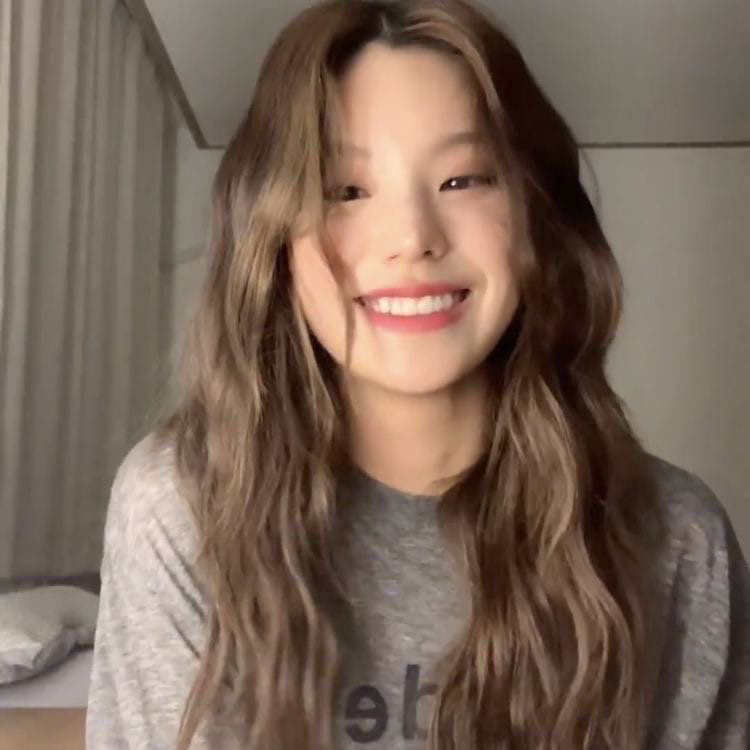
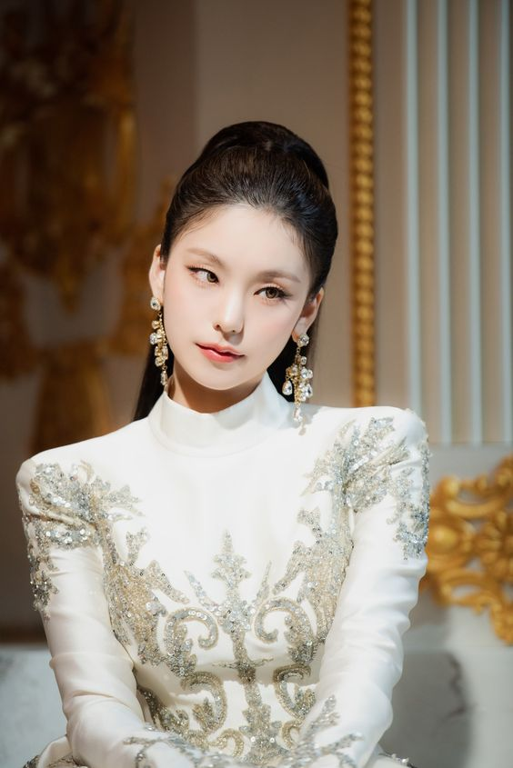

Лидер, главный танцор, ведущий вокалист, ведущий рэпер - Хван Йеджи
 Дата рождения: 26 мая 2000 года.
По национальности кореянка, родной город – Чонджу, рост – 170 см. Яркая и харизматичная участница «ITZY» в 2018 году участвовала в шоу «The FAN», где жюри ее слило, а вот зрители отчаянно поддержали. В ходе тренировочного процесса она получила травму, но упрямо продолжила участие в шоу-проекте. А до этого в 2017 году Йеджи отметилась в шоу «Stray Kids Survival Show». Девушка с нестандартной для кореянки внешностью и замечательными танцевальными способностями – один из самых многообещающих айдолов «JYP», ее даже называют «тайным оружием» компании. Стажером она стала в 2015 году, тренировалась 3 года, пока не оказалась в команде «ITZY». Фанаты считают, что Йеджи похожа на Хёнджина – участника мальчишечьей корейской группы «Stray Kids». Чтобы попасть в «JYP Entertainment», девушка прослушивалась дважды. В айдол-общежитии Йеджи делит комнату с Рюджин.